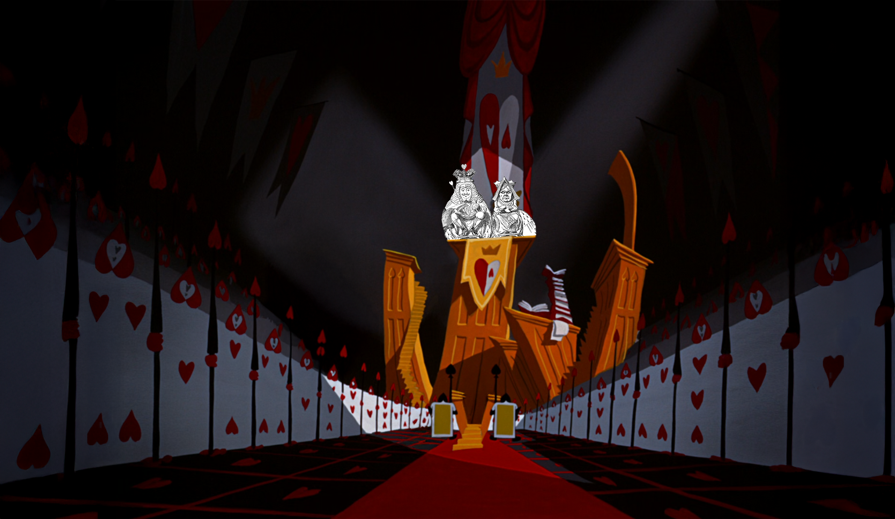
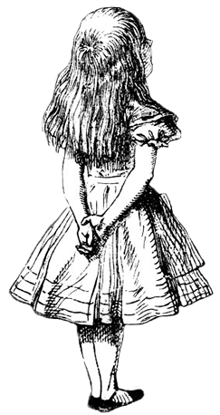
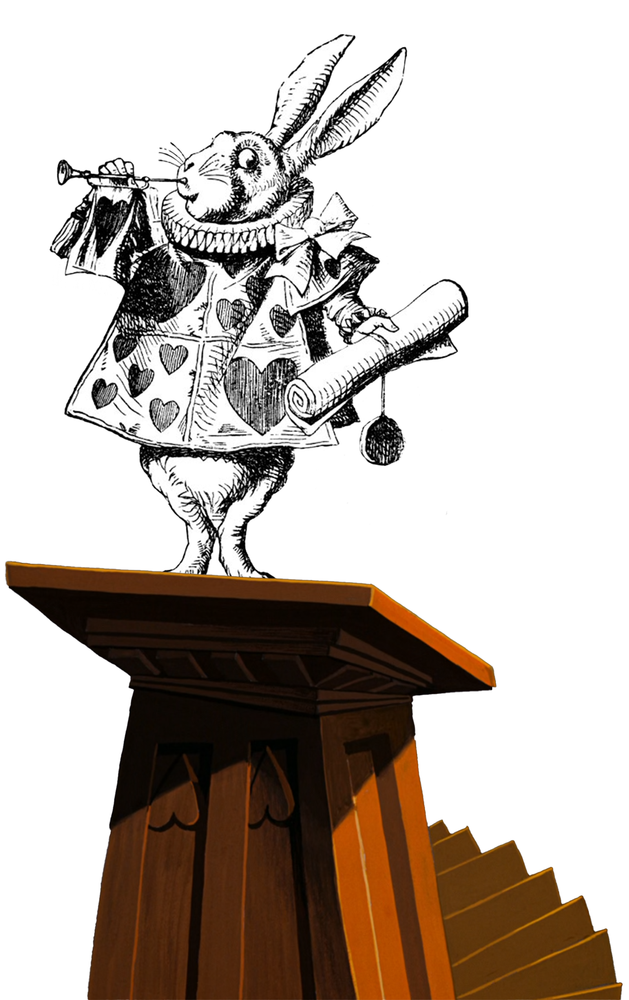
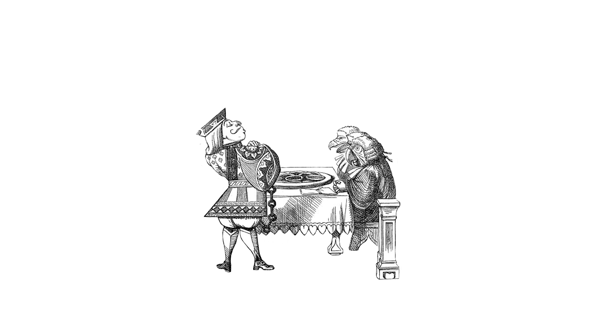
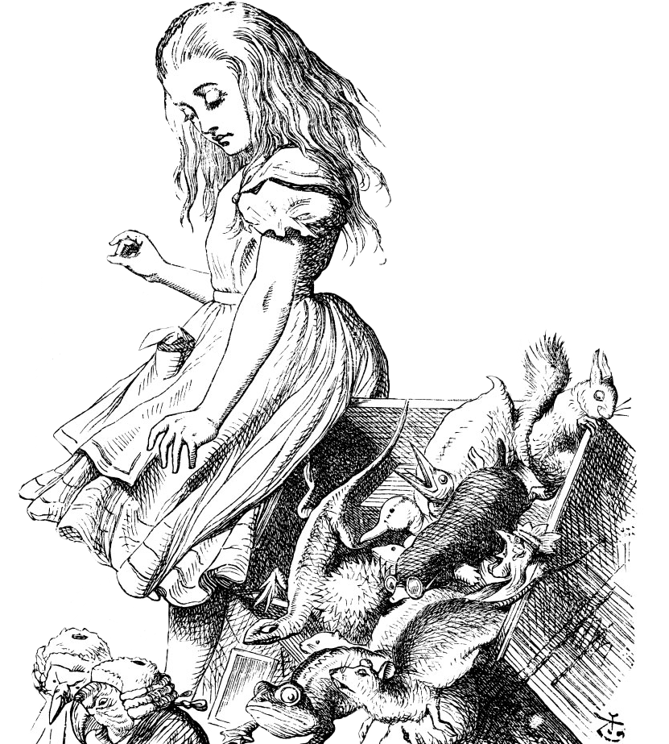

"Curiouser and curiouser!" cried Alice (she was so much surprised, that for the moment she quite forgot how to speak good English); "now I'm opening out like the largest telescope that ever was!"